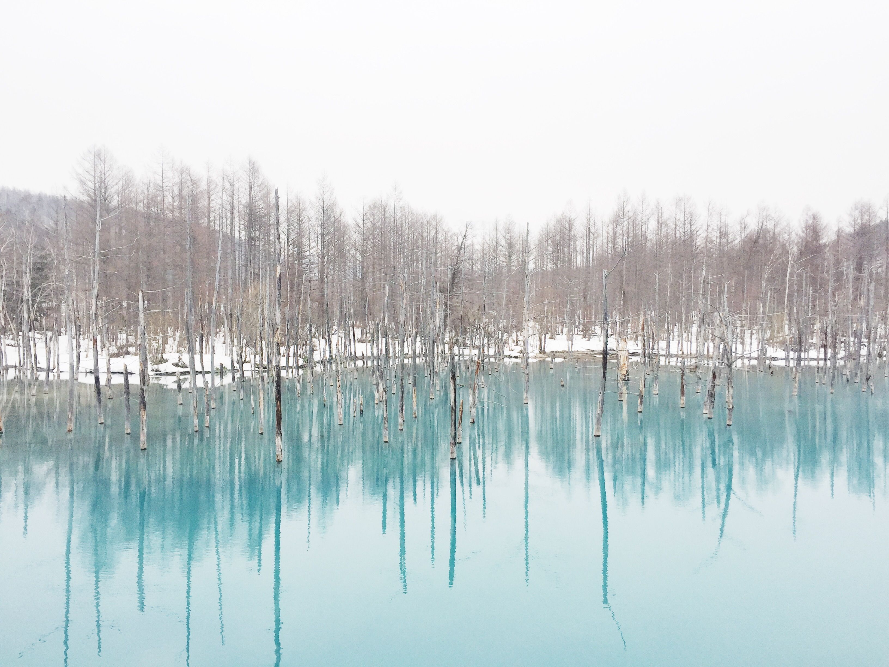
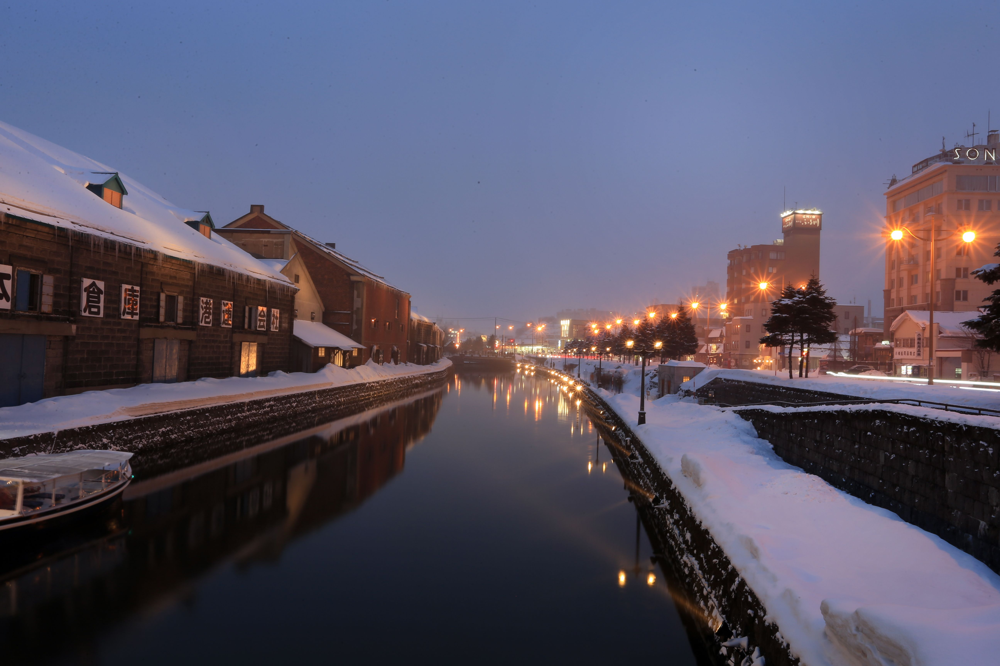
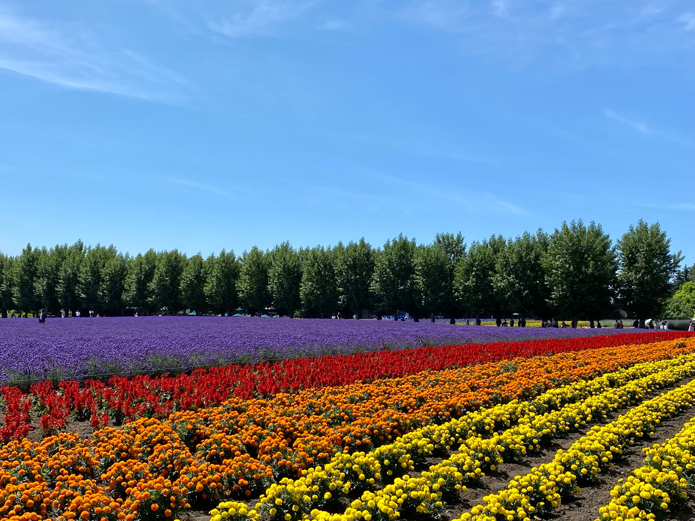
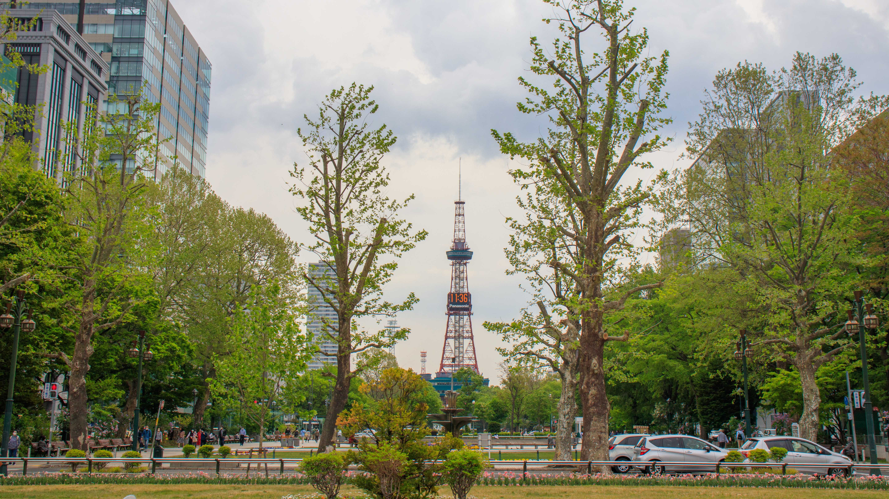
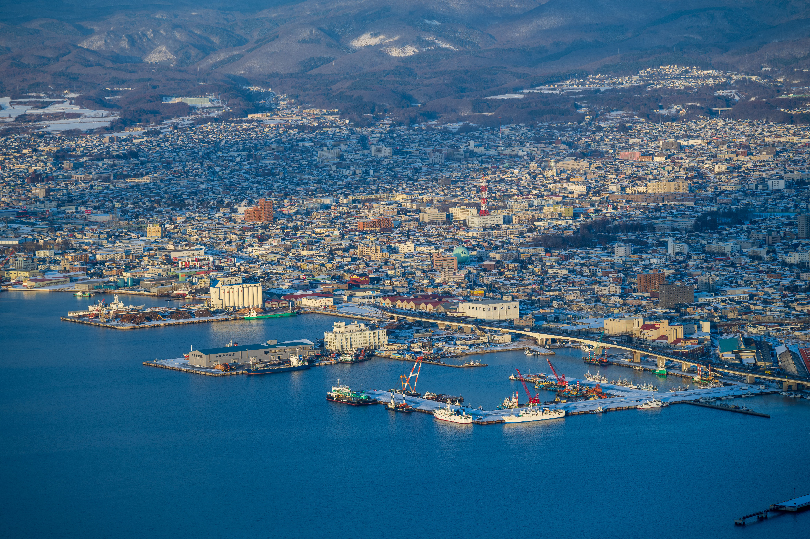
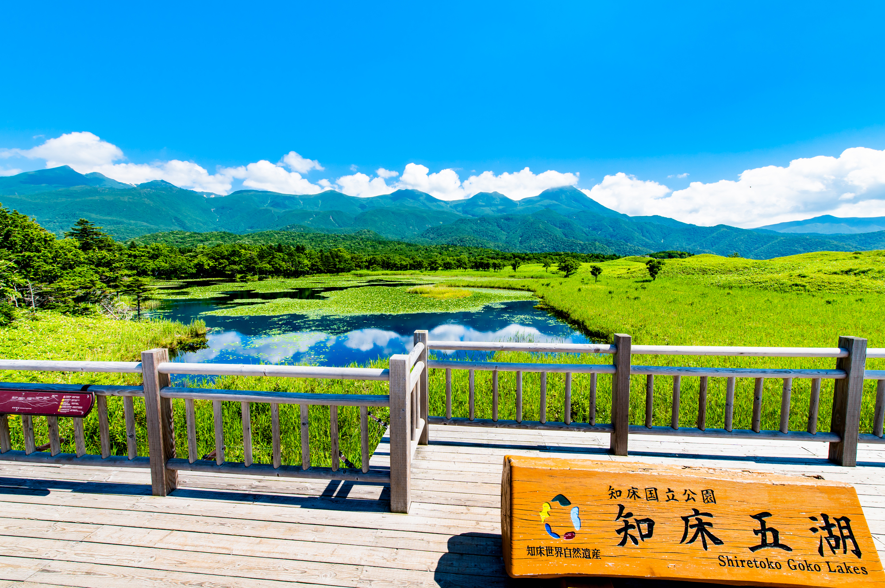

Descripción del lugar
Hokkaido es la isla más septentrional de Japón, reconocida por sus paisajes naturales espectaculares, sus montañas volcánicas, sus campos de lavanda, sus aguas termales (onsen) y sus inviernos nevados que la convierten en uno de los destinos turísticos más atractivos del país. Su capital, Sapporo, es famosa mundialmente por el Festival de la Nieve que se celebra cada mes de febrero.
Ubicación: Ver ubicación de Hokkaido en Google Maps
Características principales:
- Paisajes naturales únicos: lagos volcánicos, montañas y bosques.
- Gastronomía reconocida internacionalmente (mariscos, ramen, lácteos).
- Aguas termales naturales (onsen) para relajación.
- Festivales de nieve y actividades de invierno de talla mundial.
- Campos de lavanda y flores en la región de Furano durante el verano.
Atractivos destacados: Estanque Azul de Shirogane, Canal de Otaru, Parque Nacional de Shiretoko (Patrimonio de la Humanidad UNESCO), Parque Odori en Sapporo y la vista nocturna desde el Monte Hakodate.
Galería de imágenes

Explora
Estanque Azul, Biei
Aguas de un azul intenso rodeadas de troncos sumergidos, uno de los rincones más fotografiados de Hokkaido.

Explora
Canal de Otaru
Un canal histórico bordeado de faroles de gas y antiguos almacenes de piedra junto al mar.

Explora
Campos de lavanda, Furano
Colinas teñidas de morado durante el verano, uno de los paisajes florales más icónicos de Japón.

Explora
Parque Odori, Sapporo
El corazón verde de la capital, sede del famoso Festival de la Nieve cada febrero.

Explora
Monte Hakodate
Una de las tres mejores vistas nocturnas de Japón, con la ciudad extendida entre dos bahías.

Explora
Parque Nacional de Shiretoko
Naturaleza virgen declarada Patrimonio de la Humanidad, hogar de zorros y águilas marinas.
Tabla de itinerarios
Aviso legal: el itinerario presentado es de carácter referencial y puede sufrir modificaciones sin previo aviso debido a condiciones climáticas, disponibilidad de transporte o causas de fuerza mayor. Los horarios son aproximados. Se recomienda a los participantes contratar un seguro de viaje. La organización no se hace responsable por pérdidas, daños o accidentes derivados de actividades realizadas por cuenta propia fuera del itinerario oficial. Precios, fechas y actividades sujetos a disponibilidad; aplican términos y condiciones.